Ketch: screens and controls
Ketch is a tracker firmware for the M-VAVE FM-1. Every picture below is the firmware itself, playing the
demo song, in the emulator. Try it in the browser · Home
1 · The keybed is a gamepad
The tracker takes its eight controls from the keybed: a d-pad on the four lowest keys, laid out as an inverted T,
and SHIFT, PLAY, OPTION and EDIT on the four highest white keys. Press REC on the
panel to play notes on the middle keys instead.
In the emulator: A S W D = ◀ ▼ ▲ ▶ ·
J SHIFT · K PLAY · L OPTION · ; EDIT ·
Space panel PLAY · Tab REC · 1–0 the panel buttons.
2 · Screens and the map
SHIFT + ◀ ▶ moves along the main row: song, chain, phrase, instrument. SHIFT + ▲ ▼ moves up or down
from where you are: above song, chain and phrase is the project page (G), below them the effects (F), then the
mixer (X). Above the instrument is the event view (Q), below it the envelope (E), LFO (L) and voice (V) pages.
The map in the corner of each screen shows where you are.
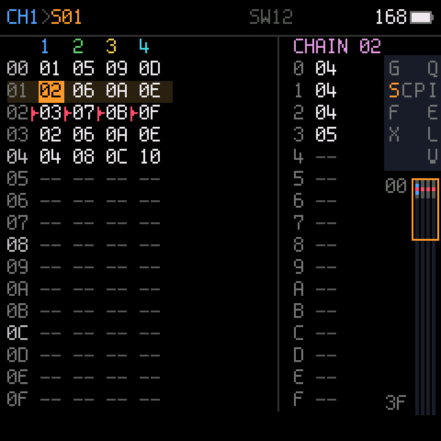
S · Song
One column per channel, a chain number per row; the song plays down the rows.
On the right, the chain under the cursor.
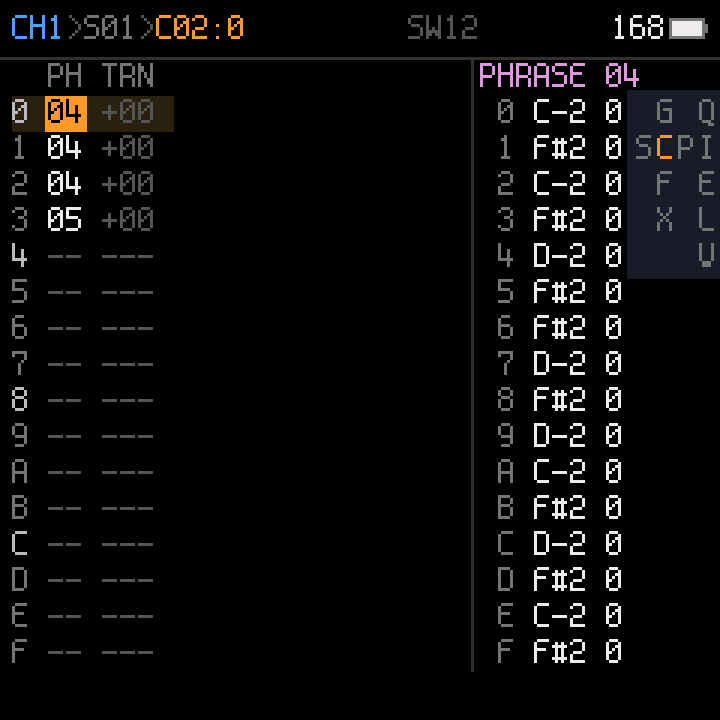
C · Chain
Up to 16 phrases in a row, each with a transpose. On the right, the phrase under the cursor.
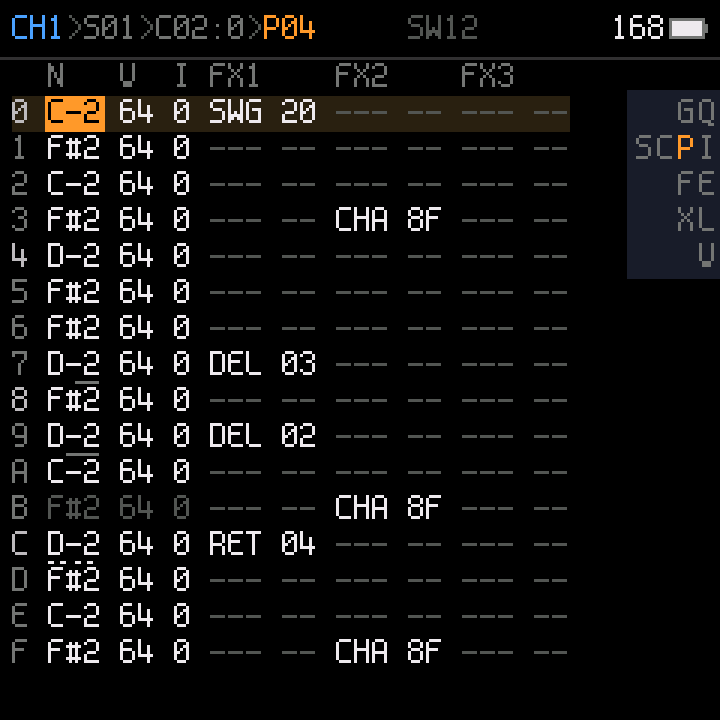
P · Phrase
16 rows of note, instrument, velocity and commands (delay, retrigger, chance,
swing, ramps, every sound parameter). The top line shows the path: channel, song row, chain row, phrase.
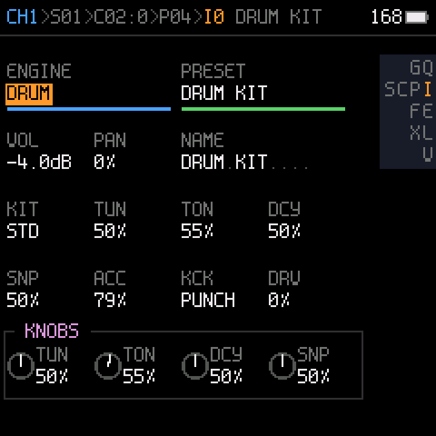
I · Instrument
Engine and preset, level, pan, name, the engine's parameters, and the four
knob slots (what KNOB 1–4 turn on the other screens).
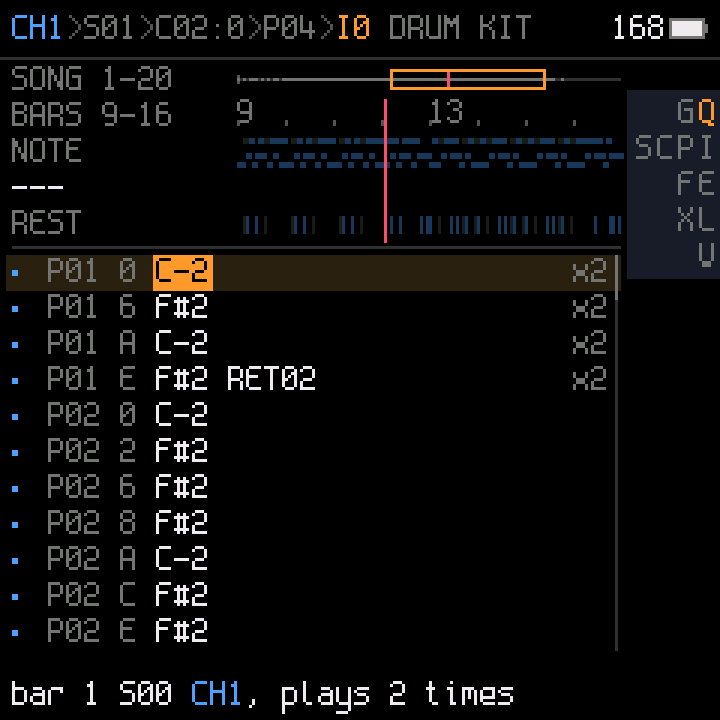
Q · Event view
Every row the instrument plays, on a timeline of the song, each listed once with
how many times it plays. Edit a row here and it changes everywhere it plays.
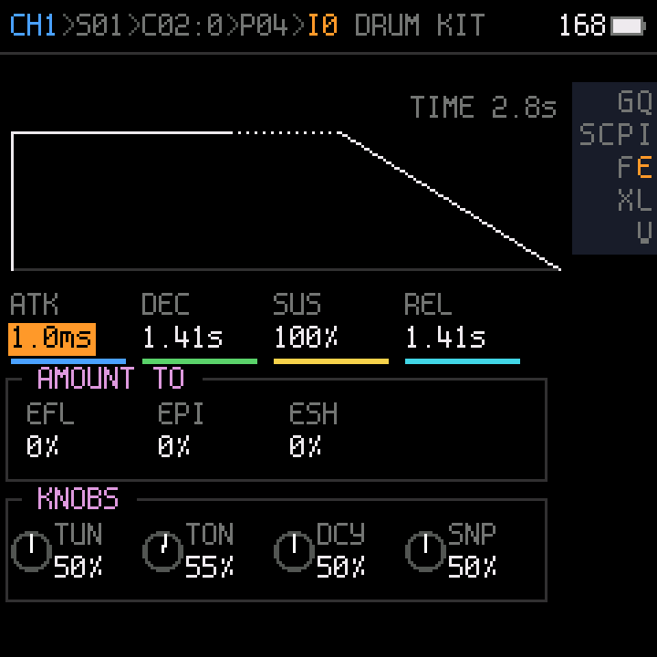
E · Envelope
Attack, decay, sustain, release, drawn, and what the envelope modulates.
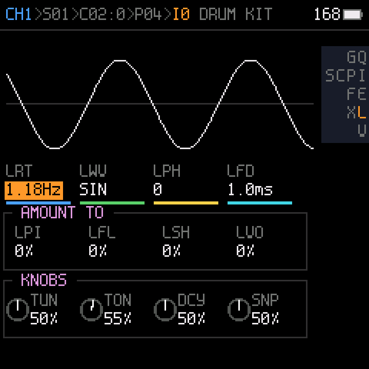
L · LFO
Rate, wave, phase, fade, drawn and moving, and what the LFO modulates.
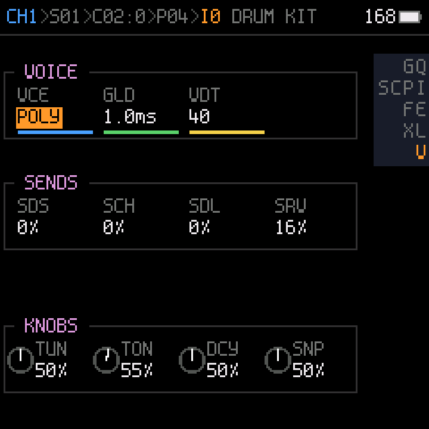
V · Voice
Poly or mono, glide, detune, and the sends to the effects.
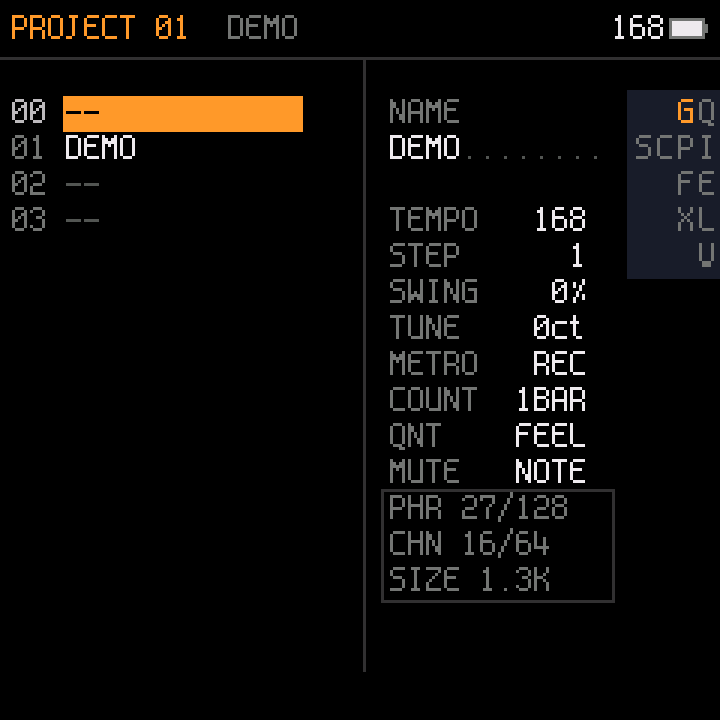
G · Project
The project slots in flash, tempo, step, swing, tune, metronome, count-in, and
how much of the song memory is used.
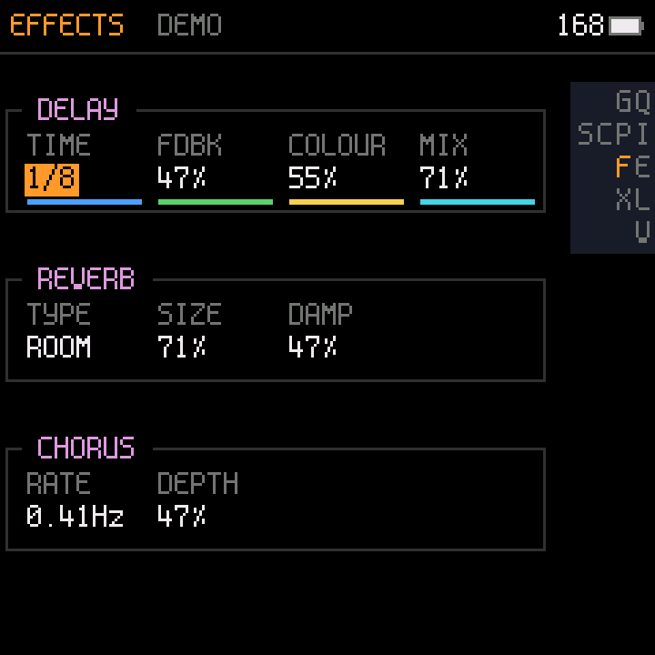
F · Effects
Delay, reverb and chorus, shared by the four channels.
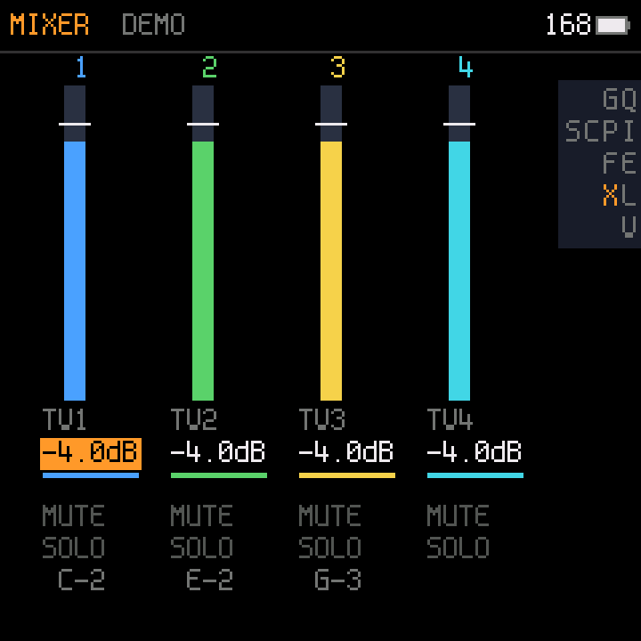
X · Mixer
Level, mute and solo per channel, and the notes each channel is playing.
3 · Editing
| d-pad | Move the cursor. |
| EDIT | On an empty cell: put the last value used in that column. On a filled cell: copy it (the next EDIT on an empty cell pastes it). |
| EDIT + ◀ ▶ | Value −1 / +1. |
| EDIT + ▼ ▲ | Value −big / +big (a note: an octave; hex: 16; transpose: 12). |
| EDIT held | On a list: a popup with every choice. On a note: a two-octave keyboard. |
| EDIT EDIT | Song or chain: a new empty chain or phrase (the next free number). |
| OPTION + EDIT | Back to the default (empty; on an empty note: a note off), or delete the selection. |
| SHIFT + OPTION | Start a selection; the d-pad extends it, OPTION copies it. On a row number: whole rows. |
| SHIFT + EDIT | Paste. On a selection in one column: interpolate. On chain or phrase numbers: clone them. |
| OPTION + ◀ ▶ | Chain, phrase: previous / next channel. Instrument pages: instrument −1 / +1. |
| OPTION + ▲ ▼ | Chain: the song row. Phrase: the chain row. Instrument pages: instrument +4 / −4. |
4 · Playing
| PLAY | Play what the screen shows: the song or the chain from the cursor row, or loop the phrase. PLAY again stops. |
| SHIFT + PLAY | All channels from the current song row, from any screen. |
| OPTION, then SHIFT | Mute / unmute the cursor's channel. |
| OPTION + PLAY | Solo / unsolo it. |
| EDIT + PLAY | Hear the instrument (instrument pages) or the line (event view) while held. |
| REC (panel) | 1st: the middle keys play notes (stopped, on the phrase screen, they write at the cursor). 2nd: armed;
PLAY then counts in and records where the playhead is. REC again: stop writing. |
| HOME (panel) | Follow: while playing, the cursor follows the playhead. |
5 · Projects (G page)
| EDIT | Load the slot. |
| EDIT EDIT | On an empty slot: a new project there. |
| SHIFT + OPTION, then OPTION | Copy the slot. |
| SHIFT + EDIT | Paste into the slot. |
| OPTION + EDIT | Delete the slot. |
| SAVE (panel) | Save the project (lit = unsaved). |
| GLO (panel) | The project page; again: back. |
| EDIT + OCT− / OCT+ (panel) | Undo / redo. |
Ketch 0.1 beta. Source and releases: github.com/risseraka/fm1-tracker-ketch (GPL-3.0).